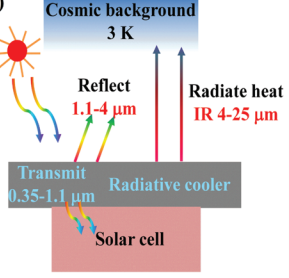
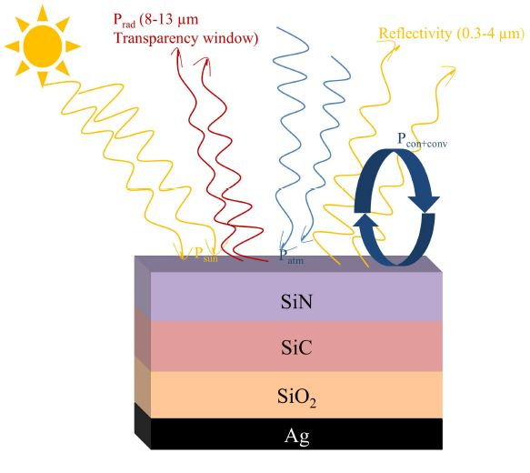

Research
Publications
Journal Papers
- [J2] Zafrin Ferdous Mira, Do Hyeon Kim, Gil Ju Lee, Se Yeon Heo, and Young Min Song, "Multilayer Selective Passive Daytime Radiative Cooler Optimization Utilizing Memetic Algorithm." Journal of Quantitative Spectroscopy & Radiative Transfer, Elsevier [Accepted]
- [J1] Young Jin Yoo, Se-Yeon Heo, Yeong Jae Kim, Joo Hwan Ko, Zafrin Ferdous Mira, and Young Min Song, "Functional photonic structures for external interaction with flexible/wearable devices." Nano Research, Springer DOI: 10.1007/s12274-021-3388-x[JCR 10%]
Conference Papers
- [C1] Zafrin Ferdous Mira, Shanzida Kabir, Murtaza Khan, and Md Jahangir Hossain, "Performance Analysis of GeO2 Doped Silica Hexagonal Photonic Crystal Fiber (H-PCF)," 2018 International Conference on Computer, Communication, Chemical, Material and Electronic Engineering (IC4ME2), Rajshahi, 2018. DOI: 10.1109/IC4ME2.2018.8465619 [Acceptance Rate: 32%]
Research Projects
PASSIVE DAYTIME RADIATIVE COOLING of SOLAR CELLS USING TRANSPARENT CONDUCTING OXIDES (TCOs)
[Ongoing project]

MULTILAYER SELECTIVE PASSIVE DAYTIME COOLER OPTIMIZATION UTILIZING MEMETIC ALGORITHM
[Manuscript under review]

PERFORMANCE ANALYSIS OF A HEXAGONAL PHOTONIC CRYSTAL FIBER(H-PCF) OVER A BROADBAND RANGE BY VARYING DOPING PARAMETERS
[Undergraduate Thesis][Part of this thesis was presented in IC4ME2 (Click Here)]
×
We have designed a hexagonal-shaped photonic crystal fiber in COMSOL Multiphysics 4.3. The Hexagonal Photonic Crystal fiber (H-PCF) has two types of air holes. The two layers of air holes that are near the elliptical core have the same radius and the last two-layer air holes have the same diameter. The model is finalized by varying the pitch (distance between two adjacent air holes) so that the light confines in the core and the dispersion is minimum. But the designed model doesn’t provide flattened dispersion in a range of wavelengths.
PERFORMANCE ANALYSIS OF A HEXAGONAL PHOTONIC CRYSTAL FIBER(H-PCF) OVER A BROADBAND RANGE BY VARYING DOPING PARAMETERS
To achieve zero and flattened dispersion we have introduced doping. The core is doped with two different materials. First, the core of the H-PCF is doped with GeO2. By varying doping and wavelengths, we have studied four important parameters such as Effective mode area, Effective mode index, Dispersion, and Nonlinearity. Again, after doping with BaF2, the same parameters are studied.
For different doping concentrations and wavelengths, we have noted the data from Comsol Multiphysics. Then, using the data we have plotted graphs in Matlab. Also, a comparison between the two different materials' influence on minimizing dispersion is shown.
In the end, we have concluded that our design can be used for zero and flattened dispersion and nonlinearity applications. As GeO2 30% doping shows more flattened dispersion in a range of wavelengths, it is proposed for the applications where flattened dispersion is needed. Also, for high negative dispersion applications 10% BaF2 will provide better results. The drawback of the proposed model is that with increasing doping concentrations it’s effective mode area decreases. By increasing the air holes of the cladding this problem may be solved.
In the end, we have concluded that our design can be used for zero and flattened dispersion and nonlinearity applications. As GeO2 30% doping shows more flattened dispersion in a range of wavelengths, it is proposed for the applications where flattened dispersion is needed. Also, for high negative dispersion applications 10% BaF2 will provide better results. The drawback of the proposed model is that with increasing doping concentrations it’s effective mode area decreases. By increasing the air holes of the cladding this problem may be solved.